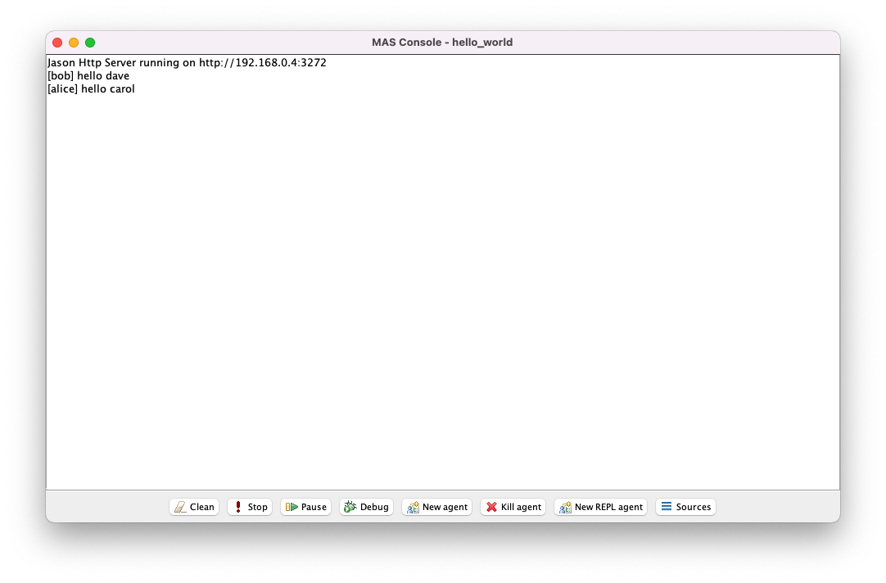
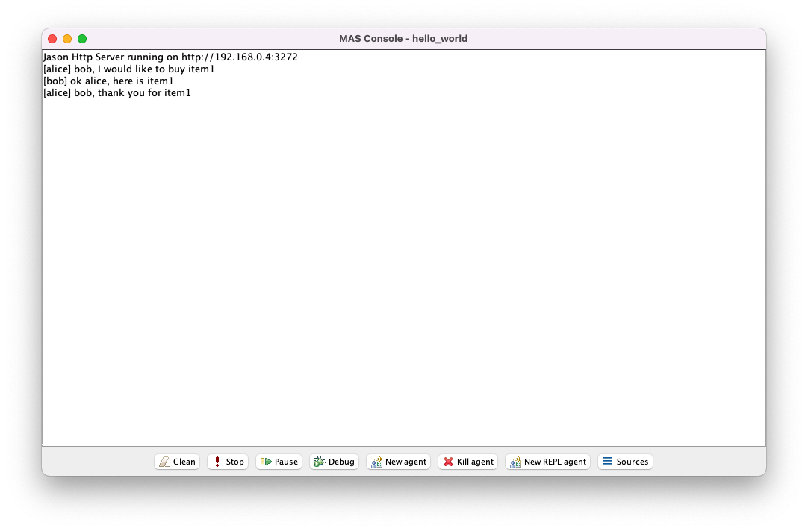

hello_world.mas2jsrc/asl/sample_agent.aslhello_world.mas2jsrc/asl/buyer_agent.asl and src/asl/seller_agent.aslhello_world.mas2jhello_world.mas2jEdit hello_world.mas2j by removing agent1 and adding two new agents called alice and bob as instances of sample_agent.
The file hello_world.mas2j looks as follows:
MAS hello_world {
infrastructure: Centralised
agents:
alice sample_agent;
bob sample_agent;
aslSourcePath:
"src/asl";
}
Notice that alice and bob are treated as different agents even though they were instantiated from the same agent file.
This method serves to simplify and generalise code, but in order to achieve interesting functionality we typically need to pass parameters to the instantiations, such as differing initial base beliefs and/or initial achievement goals.
One way this can be achieved is through the Jason configuration file.
src/asl/sample_agent.aslEdit sample_agent.asl by removing the initial achievment goal !start and updating the corresponding plan as follows:
The file src/asl/sample_agent.asl looks as follows:
// Agent sample_agent in project hello_world
/* Initial beliefs and rules */
/* Initial goals */
/* Plans */
+!start : friend(X) <- .print("hello ", X).
hello_world.mas2jEdit hello_world.mas2j by adding options in square brackets labelled beliefs and goals, where the former is a string comprised of a comma-separated list of initial base beliefs and the latter is a string comprised of a comma-separated list of initial achievement goals (without the preceding ! symbols).
The file hello_world.mas2j looks as follows:
MAS hello_world {
infrastructure: Centralised
agents:
alice sample_agent [beliefs="friend(carol)", goals="start"];
bob sample_agent [beliefs="friend(dave)", goals="start"];
aslSourcePath:
"src/asl";
}

Notice that alice and bob have different behaviour because they were initialised with differing initial base beliefs, even though they were instantiated from the sample agent file.
We can now move on to more complex agent files.
src/asl/buyer_agent.asl and src/asl/seller_agent.aslThe file src/asl/buyer_agent.asl looks as follows:
/* Initial beliefs and rules */
seller(bob).
/* Initial goals */
!buy(item1).
/* Plans */
+!buy(X) : seller(Y) & not out_of_stock(X)[source(Y)] <- .print(Y, ", I would like to buy ", X); .send(Y, tell, want(X)).
+!buy(X) : true <- .print("it looks like ", X, " is unavailable").
+recieve(X)[source(Y)] : true <- .print(Y, ", thank you for ", X).
+out_of_stock(X)[source(Y)] : true <- .print("thank you ", Y, ", I will try to find ", X , " elsewhere"); !buy(X).
The file src/asl/seller_agent.asl looks as follows:
/* Initial beliefs and rules */
in_stock(item1).
/* Initial goals */
/* Plans */
+want(X)[source(Y)] : in_stock(X) <- .print("ok ", Y, ", here is ", X); .send(Y, tell, recieve(X)); -in_stock(X).
+want(X)[source(Y)] : not in_stock(X) <- .print("sorry ", Y, ", I do not have ", X); .send(Y, tell, out_of_stock(X)).
The files src/asl/buyer_agent.asl and src/asl/seller_agent.asl can be interpreted together as follows:
alice believes that bob is a seller.bob believes that he has item1 in stock.alice wants to buy item1.alice wants to buy item X and believes there is a seller Y who has not previously informed her that they do not have X in stock, she will attempt to achieve the goal by telling Y that she wants X.bob is told by agent Y that they want to buy item X, then, if he believes X is in stock, he will tell Y that they will receive X and then revise his beliefs so that he now believes X is not in stock, otherwise he will tell Y that X is out of stock.alice is told that item X is out of stock, she will simply make another attempt to buy X.These AgentSpeak programs make use of several important features of Jason, including:
seller(bob), in_stock(item1).!buy(item1).X, Y.[source(Y)].+!buy(X).+want(X)[source(Y)].not in_stock(X).seller(Y) & not out_of_stock(X)[source(Y)]..print..send.-in_stock(X).hello_world.mas2jEdit hello_world.mas2j by making alice an instance of buyer_agent and bob an instance of seller_agent.
The file hello_world.mas2j looks as follows:
MAS hello_world {
infrastructure: Centralised
agents:
alice buyer_agent;
bob seller_agent;
aslSourcePath:
"src/asl";
}

Notice that bob had no initial goal(s) and simply reacted to an event triggered by alice.
Conversely, notice that alice exhibits both reactive and goal-directed behaviour.